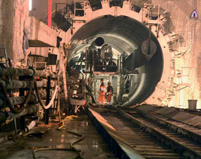
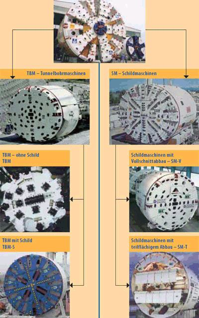
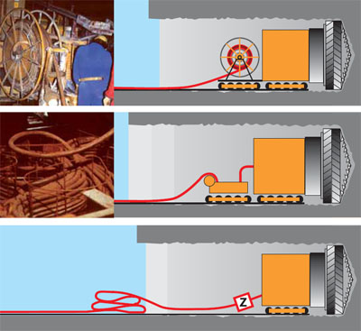
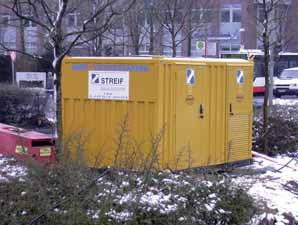
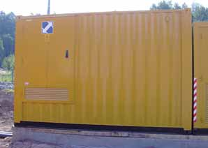
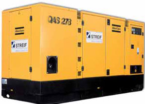
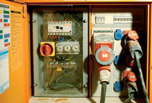

Der oft sehr hohe Energiebedarf von Tunnelbaustellen wird in der Regel durch elektrische Energie gedeckt, weil diese im Vergleich zu anderen Energieträgern viele Vorteile bietet (z.B. hohe Verfügbarkeit, keine Schadstoffe). Verbunden mit dem Fortschritt in der maschinentechnischen Entwicklung und der stetigen Steigerung der Vortriebsleistung hat sich der Bedarf an elektrischer Energie in den letzten Jahren stark erhöht.
Um dieser Entwicklung Rechnung zu tragen, fällt die Entscheidung immer häufiger für den Einsatz von Hochspannungsanlagen, da Niederspannungsanlagen die Versorgung nicht mehr gewährleisten können.
Der hohe Energiebedarf fällt an beim Betrieb von Tunnelvortriebsmaschinen, Bohrwagen, Spritzmobilen sowie bei der Versorgung von Druckluftkompressoren- und Bewetterungsanlagen.
Die Tunnelvortriebsmethoden lassen sich einteilen in den Vortrieb mit Spezialmaschinen und den konventionellen Vortrieb.
Tunnelvortriebsmaschinen (TVM) bauen entweder den gesamten Tunnelquerschnitt mit einem Bohrkopf oder Schneidrad im Vollschnitt ab oder teilflächig durch geeignete Lösevorrichtungen. Beim Abbauvorgang wird die Maschine entweder kontinuierlich oder hubweise vorgeschoben.
Tunnelbohrmaschinen (TBM)
werden eingesetzt in Festgestein mit mittlerer bis hoher Standzeit. Im Festgestein mit geringer Standzeit oder nachbrüchigem Fels werden die Tunnelbohrmaschinen mit einem Schildmantel versehen.
Schildmaschinen (SM)
werden in Lockerböden mit oder ohne Grundwasser eingesetzt, bei denen in der Regel der den Hohlraum umgebende Baugrund und die Ortsbrust gestützt werden müssen. Das kennzeichnende Merkmal dieser Maschine ist die Art der Ortsbruststützung.
Der unterschiedlich hohe Energiebedarf der genannten Vortriebsmethoden resultiert aus den angewendeten Abbau- und Förderverfahren.
Im konventionellen Vortrieb werden überwiegend Bohrwagen, Fräsen, Bagger, Spritz-, Lade- und andere Geräte mit hoher elektrischer Leistung eingesetzt. Entsprechend der Geologie und der Ausbruchsfläche wird der Vortrieb in mehrere aufeinander folgende Abbauquerschnitte unterteilt (Kalotte, Strosse, Sohle, Ulmen).
Tunnelvortriebsmaschinen – TVM

Die erforderliche Leitungslänge wird getrommelt auf der Vortriebsmaschine mitgeführt. Dabei kann die Trommelbewegung mit dem Fahrwerk der Maschine gekoppelt werden, d.h. die Leitung wird bei Vorwärtsfahrt der Maschine abgewickelt, bei Rückwärtsfahrt wieder aufgewickelt. Dadurch treten keine nennenswerten Zugkräfte in der Leitung auf. Eine zusätzliche Zugbewehrung kann entfallen, wobei die Leitung für wiederholtes Auf- und Abtrommeln (Trommelzug) geeignet sein muss.
Die erforderliche Leitungslänge wird in einem Leitungsspeicher oder auf einer Leitungstrommel gespeichert und beim Vorrücken der Maschine drallfrei entnommen. Es treten dabei nur geringe Zugspannungen auf.
Die gesamte für den Vortrieb erforderliche Leitungslänge wird vor dem oder im Inneren des Bauwerks ausgelegt und von der Maschine nachgezogen.
Auch das schlaufenförmige Verlegen der Leitung an den Stößen und Nachziehen durch die Maschine ist möglich.
Dabei treten unter Umständen große Zugkräfte in der Leitung auf. Es besteht zusätzlich die Gefahr der mechanischen Beschädigung der Leitung durch Fahrzeuge, Baumaschinen etc. Als Leitungstyp wird deshalb eine zugfeste, bewehrte Leitung empfohlen. Der Anschluss an die Vortriebsmaschine ist mit einem Zugspannungsbegrenzer auszustatten (s. Bild ). Zugspannungsbegrenzer schalten bei Überschreitung der zulässigen Zugspannung den Vortrieb automatisch mit oder ohne Vorwarnung ab.

Der Leistungsbedarf derzeitiger Vortriebsmaschinen kann von 1 bis zu 30 MVA betragen. Bei diesem Leistungsbedarf und/oder den großen Vortriebslängen ist eine Versorgung nur aus dem Hochspannungsnetz möglich. Die Hochspannungstransformatoren sind entweder in die Maschine integriert oder werden als so genannte rückbare Transformatoren hinter der Vortriebsmaschine mitgeführt.
Bei der Dimensionierung der Versorgungseinrichtungen ist der zu ermittelnde Gleichzeitigkeitsfaktor der elektrischen Verbrauchsmittel zu berücksichtigen.
Speisepunkte sind Schnittstellen zwischen den Versorgungsnetzen der EVUs und den Baustellennetzen. Die elektrische Versorgung von Anlagen und Betriebsmitteln auf Bau- und Montagestellen darf nur aus zugeordneten Speisepunkten erfolgen.
Speisepunkte zur Versorgung von elektrischen Anlagen oder Betriebsmitteln sind:

Transformatorstation

Übergabestation

Ersatzstromerzeuger

Baustromverteiler
Jeder Speisepunkt muss in Abhängigkeit von Leistungsbedarf, Versorgungsspannung und den Anforderungen der Technischen Anschlussbedingungen (TAB) der EVUs mindestens eine Einrichtung zum Trennen/Freischalten haben.
Das Freischalten mittels Sicherungs-Lasttrennschalter (NH-System oder ähnliches) mit vollständigem Berührungsschutz ist eine Bedienung und darf auch von Laien ausgeführt werden. Die Zugänglichkeit von NH-Sicherungs-Trennschaltern ohne vollständigen Berührungsschutz darf nur mittels Werkzeug möglich sein. Das bedeutet, dass sich innerhalb eines elektrischen Betriebsraumes die NH-Sicherungsleisten hinter einer Abdeckung (mindestens IP 2X) befinden müssen.
Einrichtungen zum Trennen können auch Fehlerstrom-Schutzeinrichtungen (RCD) sein.
Das Auslösen der Not-Aus-Abschaltung ist eine Notfallhandlung zum Trennen der elektrischen Energie von Anlagen oder Anlagenteilen im Gefahrenfall.
Für die Trennung eignen sich auch Überwachungsgeräte, z.B. H-Wächter. Hierfür werden die Not-Aus-Befehlsgeräte oder die automatischen Abschalteinrichtungen direkt mit dem Überwachungsstromkreis verbunden. Die Not-Aus-Befehlsgeräte müssen rot gekennzeichnet sein und als Kontrastfläche einen gelben Untergrund haben. Sie müssen gut sichtbar, leicht und gefahrlos erreichbar sein.
Das Rückstellen des Not-Aus-Befehlsgerätes darf nicht das automatische Wiederanlaufen der Anlagen zur Folge haben.
Das Not-Aus-Befehlsgerät muss so angeordnet werden, dass es auch bei beengten Betriebsverhältnissen nicht versehentlich betätigt werden kann.